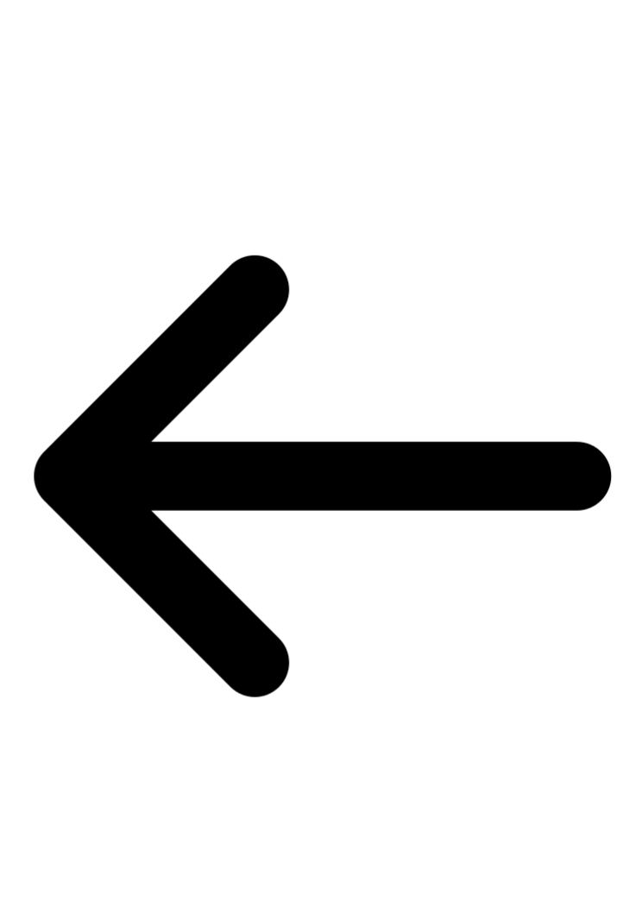

Login!

These are your user preferences!
:)
discard node
ProveMath is a growing
project
. If you are interested in collaborating or just want to say hello, feel free to
contact
us. © provemath.org 2016
login
logout
not logged in
prefs
start
subject
start
goal
start
pregoal
push me